A topdown "soulslike" project made with Unreal Engine 4.
Project information
- Category: Unreal Engine 4 Project
- Project date: -
- Steam page: Steam URL
- Made by: Dark Moth Studios.
Description
Invicta: The Next Queen is a topdown "soulslike" game based on games like "Death's Door", "Tunic" and "Dark Souls" where you play as the "Moma", a fierce warrior that lost a battle, died, and got his soul fragmented into pieces and guarded by the seven deadly sins on hell.
This project was made by a group of students from ESAT Valencia (Escuela Superior de Arte y Tecnología)
This project is private because it is an academic project but I can show you code through a personal invitation to my repository.
Project features
- A melee combat system.
- Different kinds of enemies (melee enemies, ranged enemies, bosses...).
- A simple stealth system.
- Boss fights.
- Character progression.
What I did
- Basic melee and ranged enemies (AI).
- Worked on the combat system.
- Stealth system.
How it was made
The game is being developed with the objective of being a challenging game inspired by titles such as Death's Door, Dark Souls and Tunic by picking up features of those games to try and create an interesting game experience, which together with the artistic direction make the game have its own identity.
In the project I'm focusing mainly on everything related to the enemies and the combat system and that's what I'm going to showcase and explain in this article.
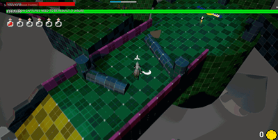Stealth System
The stealth system is custom made and its not using the perception system that Unreal provides.
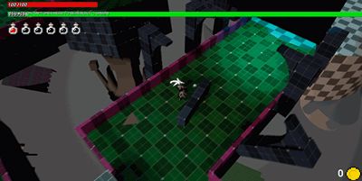 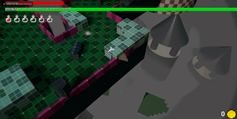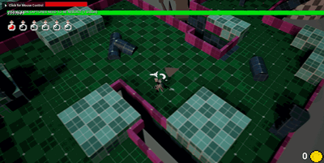
Every enemy in the game uses the same stealth system (except the bosses) and it's a very simple system that just launches raycasts in a "cone shape" to detect entities in it's path.
The system launches raycasts to the player height so it can work on different heights. This simple tricks works pretty well as there is only one thing to detect in the game (one player).
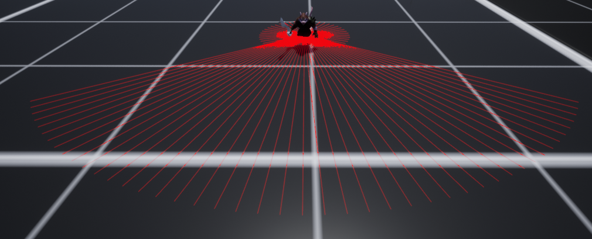The system is divided in two parts, the first one os the forward area of the cone which is divided into configurable areas with different detection values for each area.
The second part is the purple area behind the enemy that fits the angle left by the cone so there are no blind spots for the enemy as they can also detect you (at a slower rate) when you're in their backs.
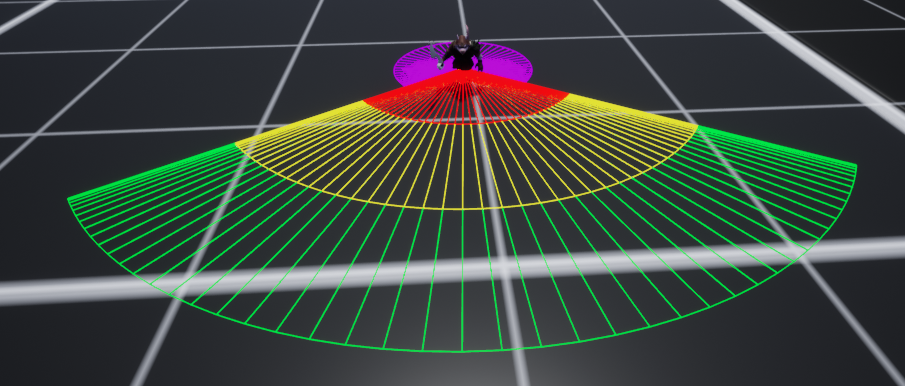You can also define different kinds of blocking volumes to create "stealth bushes", "transparent walls" or just normals walls which the enemy cannot see through.
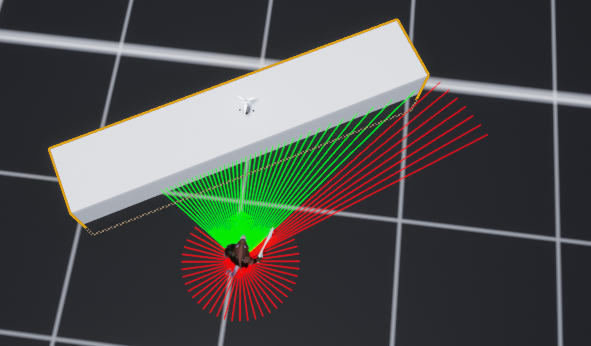 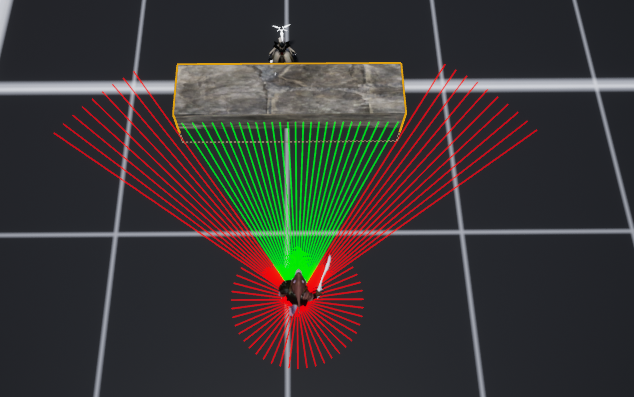 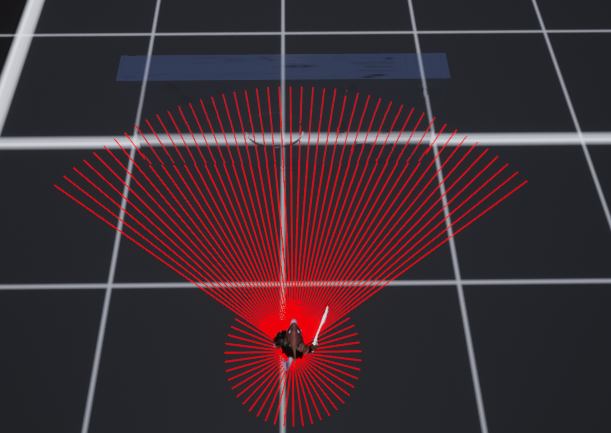Problems with this system
The main problem with this system is its performance, as having dozens os enemies launching tons of raycasts in every direction is something very expensive and there are a lot of ways of doing this better and cheaper.
There are some optimizations applied to this technique, for example, the detection system of the enemies outside the screen is deactivated, and also is deactivated when an enemy has detected you, as it has no use after that.
Those two optimizations lighten the weight of the system and improve vastly the performance as there will never be a lot of enemies who hasn't detected you in screen at the same time.
Further optimizations
There are other optimizations that could be made, for example, just launching raycasts in the direction of the player when its inside the detection angle of an enemy, that would reduce the number of raycasts a lot too but currently the game has been tested with the current system and it handles it pretty well so right now its fitting pretty nice our needs.
Melee enemies
Creepings
Creeping
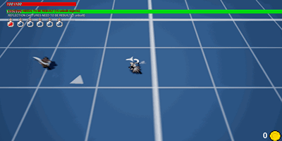Creeping runner
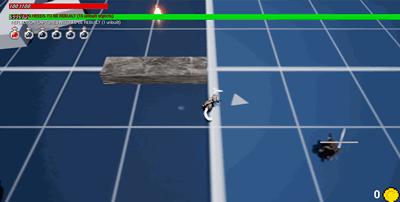Creeping captain

Ghosts
Red ghost
WORK IN PROGRESS...
Blue ghost
WORK IN PROGRESS...